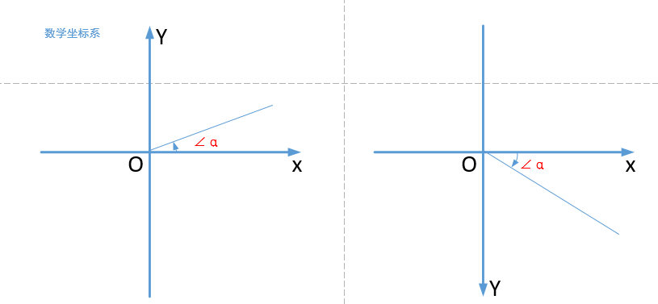

高级UI
系统ViewGroup原理解析
常见的布局容器: FrameLayout, LinearLayout,RelativeLayoout,GridLayout
后起之秀：ConstraintLayout,CoordinateLayout
Linearlayout
@Override
protected void onMeasure(int widthMeasureSpec, int heightMeasureSpec) {
if (mOrientation == VERTICAL) {
measureVertical(widthMeasureSpec, heightMeasureSpec);
} else {
measureHorizontal(widthMeasureSpec, heightMeasureSpec);
}
}
onMeasure(int widthMeasureSpec, int heightMeasureSpec) 源码如上所示，通过 mOrientation 分别处理垂直和水平两个方向的测量，其中的 mOrientation 变量则是我们在 xml 布局文件中通过 android:orientation="vertical" 或者直接通过 setOrientation(@OrientationMode int orientation) 方法设置的 LinearLayout 文件方向变量
我们仅分析垂直方向的测量方法，也就是 measureVertical(int widthMeasureSpec, int heightMeasureSpec)（水平方向的测量方法 measureHorizontal(int widthMeasureSpec, int heightMeasureSpec) 是类似的原理，有兴趣的朋友可以自己分析）
初始化变量
需要初始化一些类变量 & 声明一些重要的局部变量
void measureVertical(int widthMeasureSpec, int heightMeasureSpec) {
//第一阶段，主要是一些变量的初始化
mTotalLength = 0;// 所有 childView 的高度和 + 本身的 padding，注意：它和 LinearLayout 本身的高度是不同的
int maxWidth = 0;// 所有 childView 中宽度的最大值
int childState = 0;
int alternativeMaxWidth = 0;// 所有 layout_weight <= 0 的 childView 中宽度的最大值
int weightedMaxWidth = 0;// 所有 layout_weight >0 的 childView 中宽度的最大值
boolean allFillParent = true;
float totalWeight = 0;// 所有 childView 的 weight 之和
final int count = getVirtualChildCount();
final int widthMode = MeasureSpec.getMode(widthMeasureSpec);
final int heightMode = MeasureSpec.getMode(heightMeasureSpec);
boolean matchWidth = false;
boolean skippedMeasure = false;
final int baselineChildIndex = mBaselineAlignedChildIndex;
final boolean useLargestChild = mUseLargestChild;
int largestChildHeight = Integer.MIN_VALUE;
int consumedExcessSpace = 0;
int nonSkippedChildCount = 0;
...
｝
第一次测量
在测量第一阶段会计算那些没有设置 weight 的 childView 的高度、计算 mTotleLength，并且计算三个宽度相关的变量的值
void measureVertical(int widthMeasureSpec, int heightMeasureSpec) {
//第二阶段，第一次测量，接上面代码
// See how tall everyone is. Also remember max width.
//第一遍循环，看看每个childview的高度，并且记录最大宽度
for (int i = 0; i < count; ++i) {//一层for循环
final View child = getVirtualChildAt(i);//获取到每一个childview
if (child == null) {
mTotalLength += measureNullChild(i);
continue;
}
if (child.getVisibility() == View.GONE) {
i += getChildrenSkipCount(child, i);
continue;
}
nonSkippedChildCount++;
if (hasDividerBeforeChildAt(i)) {
mTotalLength += mDividerHeight;
}
final LayoutParams lp = (LayoutParams) child.getLayoutParams();
totalWeight += lp.weight;//计算总权重
final boolean useExcessSpace = lp.height == 0 && lp.weight > 0;//使用了权重才会满足
// 我们都知道，测量模式有三种：
// * UNSPECIFIED：父控件对子控件无约束
// * Exactly：父控件对子控件强约束，子控件永远在父控件边界内，越界则裁剪。如果要记忆的话，可以记忆为有对应的具体数值或者是Match_parent
// * AT_Most：子控件为wrap_content的时候，测量值为AT
if (heightMode == MeasureSpec.EXACTLY && useExcessSpace) {//确切高度,且height=0 权重>0
// Optimization: don't bother measuring children who are only
// laid out using excess space. These views will get measured
// later if we have space to distribute.
//先跳过测量模式为EXACTLY并且需要权重计算的childview
// 在后面第三个 for 循环重新计算此 childView 大小
final int totalLength = mTotalLength;
mTotalLength = Math.max(totalLength, totalLength + lp.topMargin + lp.bottomMargin);
skippedMeasure = true;//后面跳过Measure
} else {//高度不是确定可能是AT_MOST/UNSPECIFIED
if (useExcessSpace) {
// The heightMode is either UNSPECIFIED or AT_MOST, and
// this child is only laid out using excess space. Measure
// using WRAP_CONTENT so that we can find out the view's
// optimal height. We'll restore the original height of 0
// after measurement.
//把使用权重的childview的高度设置为wrap_content
lp.height = LayoutParams.WRAP_CONTENT;
}
// Determine how big this child would like to be. If this or
// previous children have given a weight, then we allow it to
// use all available space (and we will shrink things later
// if needed).
//这是非常重要的一个方法，将会决定每个 childView 的大小
//如果此 childView 及在此 childView 之前的 childView 中使用了 weight 属性，
// 我们允许此 childView 使用所有的空间（后续如果需要，再做调整）
final int usedHeight = totalWeight == 0 ? mTotalLength : 0;
//调用viewgroup中方法测量子view
measureChildBeforeLayout(child, i, widthMeasureSpec, 0,
heightMeasureSpec, usedHeight);
// 得到测量之后的 childView 的 childHeight
final int childHeight = child.getMeasuredHeight();
if (useExcessSpace) {
// Restore the original height and record how much space
// we've allocated to excess-only children so that we can
// match the behavior of EXACTLY measurement.
lp.height = 0;
consumedExcessSpace += childHeight;
}
// 将此 childView 的 childHeight 加入到 mTotalLength 中
// 并加上 childView 的 topMargin 和 bottomMargin
// getNextLocationOffset 方法返回 0，方便以后扩展使用
final int totalLength = mTotalLength;
mTotalLength = Math.max(totalLength, totalLength + childHeight + lp.topMargin +
lp.bottomMargin + getNextLocationOffset(child));
if (useLargestChild) {
largestChildHeight = Math.max(childHeight, largestChildHeight);//记录最大子view高度
}
}
// 下面两个 if 判断都和 `android:baselineAlignedChildIndex` 属性有关,这里不展开分析
/**
* If applicable, compute the additional offset to the child's baseline
* we'll need later when asked {@link #getBaseline}.
*/
if ((baselineChildIndex >= 0) && (baselineChildIndex == i + 1)) {
mBaselineChildTop = mTotalLength;
}
// if we are trying to use a child index for our baseline, the above
// book keeping only works if there are no children above it with
// weight. fail fast to aid the developer.
if (i < baselineChildIndex && lp.weight > 0) {
throw new RuntimeException("A child of LinearLayout with index "
+ "less than mBaselineAlignedChildIndex has weight > 0, which "
+ "won't work. Either remove the weight, or don't set "
+ "mBaselineAlignedChildIndex.");
}
boolean matchWidthLocally = false;//该子view是否需要测量宽度
// 所有 widthMode 是 `MeasureSpec.EXACTLY`，不会进入此 if 判断
if (widthMode != MeasureSpec.EXACTLY && lp.width == LayoutParams.MATCH_PARENT) {
// The width of the linear layout will scale, and at least one
// child said it wanted to match our width. Set a flag
// indicating that we need to remeasure at least that view when
// we know our width.
// 当父类（LinearLayout）不是match_parent或者精确值的时候，但子控件却是一个match_parent
// 那么matchWidthLocally和matchWidth置为true
// 意味着这个控件将会占据父类（水平方向）的所有空间
matchWidth = true;
matchWidthLocally = true;
}
// 计算三个和宽度相关的变量值
final int margin = lp.leftMargin + lp.rightMargin;
final int measuredWidth = child.getMeasuredWidth() + margin;
maxWidth = Math.max(maxWidth, measuredWidth);
childState = combineMeasuredStates(childState, child.getMeasuredState());//获取子viewmeasure后的state状态
allFillParent = allFillParent && lp.width == LayoutParams.MATCH_PARENT;
if (lp.weight > 0) {
//需要计算权重的
/*
* Widths of weighted Views are bogus if we end up
* remeasuring, so keep them separate.
* alternative 可供选择的
*/
weightedMaxWidth = Math.max(weightedMaxWidth,
matchWidthLocally ? margin : measuredWidth);
} else {
//如果不需要计算权重走这里
alternativeMaxWidth = Math.max(alternativeMaxWidth,
matchWidthLocally ? margin : measuredWidth);
}
i += getChildrenSkipCount(child, i);
}//for循环结束
// 如果存在没有跳过的 childView 并且需要绘制 end divider 则需要加上 end 位置的 divider 的高度
if (nonSkippedChildCount > 0 && hasDividerBeforeChildAt(count)) {
mTotalLength += mDividerHeight;
}
measureChildBeforeLayout()
在此方法中将会计算每个 childView 的大小,调用 ViewGroup 的 measureChildWithMargins() 方法计算每个 childView 的大小，在测量垂直方向的 childView 时，有一个非常重要的参数需要注意，即：heightUsed，根据英文注释，heightUsed 是指在垂直方向，已经被 parentView 或者 parentView 的其他 childView 使用了的空间
void measureChildBeforeLayout(View child, int childIndex,
int widthMeasureSpec, int totalWidth, int heightMeasureSpec,
int totalHeight) {
measureChildWithMargins(child, widthMeasureSpec, totalWidth,
heightMeasureSpec, totalHeight);
}
第二次测量
如果进入这个 if 条件，会进行第二次的 for 循环遍历 childView，重新计算 mTotalLength
void measureVertical(int widthMeasureSpec, int heightMeasureSpec) {
//接上面代码
if (useLargestChild &&
(heightMode == MeasureSpec.AT_MOST || heightMode == MeasureSpec.UNSPECIFIED)) {
mTotalLength = 0;
//重新计算总高度:每个非gone的view的高度都按 上次循环记录的最大子view的高度计算,再加上margin
for (int i = 0; i < count; ++i) {
final View child = getVirtualChildAt(i);
if (child == null) {
mTotalLength += measureNullChild(i);
continue;
}
if (child.getVisibility() == GONE) {
i += getChildrenSkipCount(child, i);
continue;
}
final LinearLayout.LayoutParams lp = (LinearLayout.LayoutParams)
child.getLayoutParams();
// Account for negative margins
final int totalLength = mTotalLength;
mTotalLength = Math.max(totalLength, totalLength + largestChildHeight +
lp.topMargin + lp.bottomMargin + getNextLocationOffset(child));
}
}
测量第三阶段
针对设置了 android:layout_weight 属性的布局，重新计算 mTotalLength
void measureVertical(int widthMeasureSpec, int heightMeasureSpec) {
//接上面代码
// Add in our padding
mTotalLength += mPaddingTop + mPaddingBottom;
int heightSize = mTotalLength;
// Check against our minimum height
// 通过 getSuggestedMinimumHeight() 得到建议最小高度，并和计算得到的
// mTotalLength 比较取最大值
heightSize = Math.max(heightSize, getSuggestedMinimumHeight());
// Reconcile our calculated size with the heightMeasureSpec
// 通过 heightMeasureSpec，调整 heightSize 的大小
int heightSizeAndState = resolveSizeAndState(heightSize, heightMeasureSpec, 0);
heightSize = heightSizeAndState & MEASURED_SIZE_MASK;
// Either expand children with weight to take up available space or
// shrink them if they extend beyond our current bounds. If we skipped
// measurement on any children, we need to measure them now.
// 重新计算有 weight 属性的 childView 大小，
// 如果还有可用的空间，则扩展 childView，计算其大小
// 如果 childView 超出了 LinearLayout 的边界，则收缩 childView
int remainingExcess = heightSize - mTotalLength
+ (mAllowInconsistentMeasurement ? 0 : consumedExcessSpace);
if (skippedMeasure
|| ((sRemeasureWeightedChildren || remainingExcess != 0) && totalWeight > 0.0f)) {
// 根据 mWeightSum 计算得到 remainingWeightSum，mWeightSum 是通过
// `android:weightSum` 属性设置的，totalWeight 是通过第一次 for 循环计算得到的
float remainingWeightSum = mWeightSum > 0.0f ? mWeightSum : totalWeight;
// 将 mTotalLength 复位为 0
mTotalLength = 0;
// 权重childview的测量，开始真正的第二次 for 循环遍历每一个 childView，重新测量每一个 childView
for (int i = 0; i < count; ++i) {
final View child = getVirtualChildAt(i);
if (child == null || child.getVisibility() == View.GONE) {
continue;
}
final LayoutParams lp = (LayoutParams) child.getLayoutParams();
final float childWeight = lp.weight
// 如果该 childView 设置了 `weight` 值，则进入 if 语句块
if (childWeight > 0) {
// 这是设置了 weight 的情况下，最重要的一行代码
// remainingExcess 剩余高度 * ( childView 的 weight / remainingWeightSum)
// share 便是此 childView 通过这个公式计算得到的高度，
// 并重新计算剩余高度 remainingExcess 和剩余权重总和 remainingWeightSum
final int share = (int) (childWeight * remainingExcess / remainingWeightSum);
remainingExcess -= share;
remainingWeightSum -= childWeight;
// 通过下面的 if 条件重新计算，childHeight 是最终 childView 的真正高度
final int childHeight;
if (mUseLargestChild && heightMode != MeasureSpec.EXACTLY) {
childHeight = largestChildHeight;
} else if (lp.height == 0 && (!mAllowInconsistentMeasurement
|| heightMode == MeasureSpec.EXACTLY)) {
// This child needs to be laid out from scratch using
// only its share of excess space.
childHeight = share;
} else {
// This child had some intrinsic height to which we
// need to add its share of excess space.
childHeight = child.getMeasuredHeight() + share;
}
// 计算 childHeightMeasureSpec & childWidthMeasureSpec，并调用 child.measure() 方法
final int childHeightMeasureSpec = MeasureSpec.makeMeasureSpec(
Math.max(0, childHeight), MeasureSpec.EXACTLY);
final int childWidthMeasureSpec = getChildMeasureSpec(widthMeasureSpec,
mPaddingLeft + mPaddingRight + lp.leftMargin + lp.rightMargin,
lp.width);
child.measure(childWidthMeasureSpec, childHeightMeasureSpec);
// Child may now not fit in vertical dimension.
childState = combineMeasuredStates(childState, child.getMeasuredState()
& (MEASURED_STATE_MASK>>MEASURED_HEIGHT_STATE_SHIFT));
}
final int margin = lp.leftMargin + lp.rightMargin;
final int measuredWidth = child.getMeasuredWidth() + margin;
maxWidth = Math.max(maxWidth, measuredWidth);
boolean matchWidthLocally = widthMode != MeasureSpec.EXACTLY &&
lp.width == LayoutParams.MATCH_PARENT;
alternativeMaxWidth = Math.max(alternativeMaxWidth,
matchWidthLocally ? margin : measuredWidth);
allFillParent = allFillParent && lp.width == LayoutParams.MATCH_PARENT;
// 考虑 childView.topMargin & childView.bottomMargin，重新计算 mTotalLength
final int totalLength = mTotalLength;
mTotalLength = Math.max(totalLength, totalLength + child.getMeasuredHeight() +
lp.topMargin + lp.bottomMargin + getNextLocationOffset(child));
}
// Add in our padding
// 完成 for 循环之后，加入 LinearLayout 本身的 mPaddingTop & mPaddingBottom
mTotalLength += mPaddingTop + mPaddingBottom;
// TODO: Should we recompute the heightSpec based on the new total length?
} else {
// 重新计算 alternativeMaxWidth
alternativeMaxWidth = Math.max(alternativeMaxWidth,
weightedMaxWidth);
// We have no limit, so make all weighted views as tall as the largest child.
// Children will have already been measured once.
if (useLargestChild && heightMode != MeasureSpec.EXACTLY) {
for (int i = 0; i < count; i++) {
final View child = getVirtualChildAt(i);
if (child == null || child.getVisibility() == View.GONE) {
continue;
}
final LinearLayout.LayoutParams lp =
(LinearLayout.LayoutParams) child.getLayoutParams();
float childExtra = lp.weight;
if (childExtra > 0) {
child.measure(
MeasureSpec.makeMeasureSpec(child.getMeasuredWidth(),
MeasureSpec.EXACTLY),
MeasureSpec.makeMeasureSpec(largestChildHeight,
MeasureSpec.EXACTLY));
}
}
}
}
if (!allFillParent && widthMode != MeasureSpec.EXACTLY) {
maxWidth = alternativeMaxWidth;
}
// 调整 width 大小
maxWidth += mPaddingLeft + mPaddingRight;
// Check against our minimum width
maxWidth = Math.max(maxWidth, getSuggestedMinimumWidth());
// 调用 setMeasuredDimension() 设置 LinearLayout 的大小
setMeasuredDimension(resolveSizeAndState(maxWidth, widthMeasureSpec, childState),
heightSizeAndState);
//最后，设置LinearLayout的size大小和状态，如果LinearLayout有设置width为match_parent的话，将会调用forceUniformWidth再测量一次所有的subchild，这里主要是测量subchild的width大小
if (matchWidth) {
forceUniformWidth(count, heightMeasureSpec);
}
假如一共有3个subchild且都有设置weight ，分别为3、2、1，我们假设剩余的space为120，则第一个view的大小为120 * 3/（3+2+1）=60，第二个view的大小为（120-60）*2/（2+1）=40，第3个view的大小为（60-40）*1/1 = 20
resolveSizeAndState
public static int resolveSizeAndState(int size, int measureSpec, int childMeasuredState) {
final int specMode = MeasureSpec.getMode(measureSpec);
final int specSize = MeasureSpec.getSize(measureSpec);
final int result;
switch (specMode) {
case MeasureSpec.AT_MOST:
if (specSize < size) {
result = specSize | MEASURED_STATE_TOO_SMALL;
} else {
result = size;
}
break;
case MeasureSpec.EXACTLY:
result = specSize;
break;
case MeasureSpec.UNSPECIFIED:
default:
result = size;
}
return result | (childMeasuredState & MEASURED_STATE_MASK);
}
总结
- LinearLayout针对设置weight与不设置weight的情况分别处理
- 在 LinearLayout 中总共有 3 个 for 循环，分别处理不同的流程
- 第一个 for 循环，只会在不使用 weight 属性时进入，并有可能会测量每个 childView 的大小
- 第二个 for 循环，在使用 android:measureWithLargestChild 时才会进入，并且即使进入也不会调用 childView 的测量方法，只会更新 mTotalLength 变量
- 第三个 for 循环，只会在使用 weight 属性时进入，并测量每个 childView 的大小
自定义View总结
自定义UI基础
- Android的坐标系



- View的静态坐标方法
| View的静态坐标方法 | 解释 |
|---|---|
| getLeft() | 返回View自身左边到父布局左边的距离 |
| getTop() | 返回View自身顶边到父布局顶边的距离 |
| getRight() | 返回View自身右边到父布局左边的距离 |
| getBottom() | 返回View自身底边到父布局顶边的距离 |
| getX() | 返回值为getLeft()+getTranslationX()，当setTranslationX()时getLeft()不变，getX()变。 |
| getY() | 返回值为getTop()+getTranslationY()，当setTranslationY()时getTop()不变，getY()变。 |
- 手指触摸屏幕时MotionEvent
| MotionEvent坐标方法 | 解释 |
|---|---|
| getX() | 当前触摸事件距离当前View左边的距离 |
| getY() | 当前触摸事件距离当前View顶边的距离 |
| getRawX() | 当前触摸事件距离整个屏幕左边的距离 |
| getRawY() | 当前触摸事件距离整个屏幕顶边的距离 |
- 获取宽高
| View宽高方法 | 解释 |
|---|---|
| getWidth() | layout后有效，返回值是mRight-mLeft，一般会参考measure的宽度（measure可能没用），但不是必须的。 |
| getHeight() | layout后有效，返回值是mBottom-mTop，一般会参考measure的高度（measure可能没用），但不是必须的。 |
| getMeasuredWidth() | 返回measure过程得到的mMeasuredWidth值，供layout参考，或许没用。 |
| getMeasuredHeight() | 返回measure过程得到的mMeasuredHeight值，供layout参考，或许没用。 |
- 获取view位置
| View的方法 | 结论描述 |
|---|---|
| getLocalVisibleRect() | 获取View自身可见的坐标区域，坐标以自己的左上角为原点(0,0)，另一点为可见区域右下角相对自己(0,0)点的坐标，其实View2当前height为550，可见height为470。 |
| getGlobalVisibleRect() | 获取View在屏幕绝对坐标系中的可视区域，坐标以屏幕左上角为原点(0,0)，另一个点为可见区域右下角相对屏幕原点(0,0)点的坐标。 |
| getLocationOnScreen() | 坐标是相对整个屏幕而言，Y坐标为View左上角到屏幕顶部的距离。 |
| getLocationInWindow() | 如果为普通Activity则Y坐标为View左上角到屏幕顶部（此时Window与屏幕一样大）；如果为对话框式的Activity则Y坐标为当前Dialog模式Activity的标题栏顶部到View左上角的距离。 |
- View滑动相关坐标系
View的scrollTo()和scrollBy()是用于滑动View中的内容，而不是改变View的位置；改变View在屏幕中的位置可以使用offsetLeftAndRight()和offsetTopAndBottom()方法，他会导致getLeft()等值改变
| View的滑动方法 | 效果及描述 |
|---|---|
| offsetLeftAndRight(int offset) | 水平方向挪动View，offset为正则x轴正向移动，移动的是整个View，getLeft()会变的，自定义View很有用。 |
| offsetTopAndBottom(int offset) | 垂直方向挪动View，offset为正则y轴正向移动，移动的是整个View，getTop()会变的，自定义View很有用。 |
| scrollTo(int x, int y) | 将**View中内容（不是整个View）**滑动到相应的位置，参考坐标原点为ParentView左上角，x，y为正则向xy轴反方向移动，反之同理。 |
| scrollBy(int x, int y) | 在scrollTo()的基础上继续滑动xy。 |
| setScrollX(int value) | 实质为scrollTo()，只是只改变Y轴滑动。 |
| setScrollY(int value) | 实质为scrollTo()，只是只改变X轴滑动。 |
| getScrollX()/getScrollY() | 获取当前滑动位置偏移量。 |

- 自定义view分类
-
自定义View的基本方法
自定义View的最基本的三个方法分别是： onMeasure()、onLayout()、onDraw();
View在Activity中显示出来，要经历测量、布局和绘制三个步骤，分别对应三个动作：measure、layout和draw。- 测量：onMeasure()决定View的大小；
- 布局：onLayout()决定View在ViewGroup中的位置；
- 绘制：onDraw()决定绘制这个View。
-
自定义控件分类
- 自定义View: 只需要重写onMeasure()和onDraw()
- 自定义ViewGroup: 则只需要重写onMeasure()和onLayout()
-
视图View主要分为两类
| 类别 | 解释 | 特点 |
|---|---|---|
| 单一视图 | 即一个View，如TextView | 不包含子View |
| 视图组 | 即多个View组成的ViewGroup，如LinearLayout | 包含子View |
-
View类简介
- View类是Android中各种组件的基类，如View是ViewGroup基类
- View表现为显示在屏幕上的各种视图
Android中的UI组件都由View、ViewGroup组成。
-
View的构造函数：共有4个
// 如果View是在Java代码里面new的，则调用第一个构造函数
public CustomView(Context context) {
super(context);
}
// 如果View是在.xml里声明的，则调用第二个构造函数
// 自定义属性是从AttributeSet参数传进来的
public CustomView(Context context, AttributeSet attrs) {
super(context, attrs);
}
// 不会自动调用
// 一般是在第二个构造函数里主动调用
// 如View有style属性时
public CustomView(Context context, AttributeSet attrs, int defStyleAttr) {
super(context, attrs, defStyleAttr);
}
//API21之后才使用
// 不会自动调用
// 一般是在第二个构造函数里主动调用
// 如View有style属性时
public CustomView(Context context, AttributeSet attrs, int defStyleAttr, int defStyleRes) {
super(context, attrs, defStyleAttr, defStyleRes);
}
-
AttributeSet与自定义属性
系统自带的View可以在xml中配置属性，对于写的好的自定义View同样可以在xml中配置属性，为了使自定义的View的属性可以在xml中配置，需要以下4个步骤：- 通过
<declare-styleable>为自定义View添加属性 - 在xml中为相应的属性声明属性值
- 在运行时（一般为构造函数）获取属性值
- 将获取到的属性值应用到View
- 通过
-
View视图结构
- PhoneWindow是Android系统中最基本的窗口系统，继承自Windows类，负责管理界面显示以及事件响应。它是Activity与View系统交互的接口
- DecorView是PhoneWindow中的起始节点View，继承于View类，作为整个视图容器来使用。用于设置窗口属性。它本质上是一个FrameLayout
- ViewRoot在Activtiy启动时创建，负责管理、布局、渲染窗口UI等等

上图是 Activity 的结构。我们先进行大致的描述，然后在进入源码体会这一过程。
我们可以清晰的知道一个 Activity 会对应着有一个 Window，而 Window 的唯一实现类为 PhoneWindow，PhoneWindow 的初始化是在 Activity 的 attach 方法中，我们前面也有提到 attach 方法。
在往下一层是一个 DecorView，被 PhoneWindow 持有着，DecorView 的初始化在 setContentView 中，这个我们待会会进行详细分析。DecorView 是我们的顶级View，我们设置的布局只是其子View。
DecorView 是一个 FrameLayout。但在 setContentView 中，会给他加入一个线性的布局(LinearLayout)。该线性布局的子View 则一般由 TitleBar 和 ContentView 进行组成。TitleBar 我们可以通过 requestWindowFeature(Window.FEATURE_NO_TITLE); 进行去除，而 ContentView 则是来装载我们设置的布局文件的 ViewGroup 了
对于多View的视图，结构是树形结构：最顶层是ViewGroup，ViewGroup下可能有多个ViewGroup或View，如下图：

一定要记住：无论是measure过程、layout过程还是draw过程，永远都是从View树的根节点开始测量或计算（即从树的顶端开始），一层一层、一个分支一个分支地进行（即树形递归），最终计算整个View树中各个View，最终确定整个View树的相关属性
view的生命周期


绘制流程从何而起
我们一说到绘制流程，就会想到或是听过onMeasure、onLayout、onDraw这三个方法，但是有没想过为什么我们开启一个App或是点开一个Activity，就会触发这一系列流程呢？想知道绘制流程从何而起，我们就有必要先解释 App启动流程 和 Activity的启动流程。我们都知道
ActivityThread 的 main 是一个App的入口。我们来到 main 方法看看他做了什么启动操作。ActivityThread 的 main方法是由 ZygoteInit 类中最终通过 RuntimeInit类的invokeStaticMain 方法进行反射调用


- measure流程

- layout流程

- draw流程

- 刷新

测量是如何进行的
-
测量遍历在 measure(int, int) 中实现，是 View 树的自上而下遍历。在递归过程中，每个 View 都会将维度规范下推到布局树。在测量遍历结束时，每个 View 均存储了其测量值。第二次遍历发生在 layout(int, int, int, int) 中，也是自上而下遍历。在此次遍历中，每个父级负责使用测量遍历中计算的尺寸来定位其所有的子级。当返回 View 对象的 measure() 方法时，必须设置其 getMeasuredWidth() 和 getMeasuredHeight() 值，以及该 View 对象的所有子级的值。View 对象的测量宽度值和测量高度值必须遵守 View 对象的父级所施加的限制。这就保证了在测量遍历结束时，所有父级都会接受其子级的所有测量值。父级 View 可以对其子级多次调用 measure()。例如，父级可以使用未指定的维度测量每个子级一次，以确定它们希望的大小；然后，如果所有子级不受限制的尺寸的总和过大或过小，则再次使用实际的数字对它们调用 measure()（即，如果子级未就各自获得多少空间达成一致，则父级将会介入并针对第二次遍历设置规则）。
-
测量遍历使用两个类来传达维度。View 对象使用 ViewGroup.LayoutParams 类来告知父级它们想要如何测量和定位。基本的 ViewGroup.LayoutParams 类仅描述了 View 希望的宽度和高度。针对每个维度，它可以指定以下某一项：
- 一个确切的数字
- MATCH_PARENT，该参数意味着 View 想要和它的父级一样大（负填充）
- WRAP_CONTENT，该参数意味着 View 想要足够大，以包含其内容（正填充）。
有适用于 ViewGroup 的不同子类的 ViewGroup.LayoutParams 子类。例如，RelativeLayout 有自己的 ViewGroup.LayoutParams 子类，其中包括使子级 View 对象水平和垂直居中的功能。
MeasureSpec 对象用于在树中将要求从父级下推到子级。MeasureSpec 可以为以下三种模式之一：
- UNSPECIFIED：父级使用该模式来确定子级 View 所需的维度。例如，LinearLayout 可能会对其高度设置为 UNSPECIFIED 和宽度设置为 EXACTLY 240 的子级调用 measure()，从而确定宽度为 240 像素的子级 View 所需的高度。
- EXACTLY：父级使用该模式来强制子级使用某个确切尺寸。子级必须使用该尺寸，并保证其所有的子项都能放入该尺寸。
- AT MOST：父级使用该模式来强制规定子级的最大尺寸。子级必须保证它及其所有的子项都能放入该尺寸

// ViewGroup 类
public static int getChildMeasureSpec(int spec, int padding, int childDimension) {
int specMode = MeasureSpec.getMode(spec);
int specSize = MeasureSpec.getSize(spec);
int size = Math.max(0, specSize - padding);
int resultSize = 0;
int resultMode = 0;
switch (specMode) {
// 父视图为确定的大小的模式
case MeasureSpec.EXACTLY:
/**
* 根据子视图的大小，进行不同模式的组合：
* 1、childDimension 大于 0，说明子视图设置了具体的大小
* 2、childDimension 为 {@link LayoutParams.MATCH_PARENT}，说明大小和其父视图一样大
* 3、childDimension 为 {@link LayoutParams.WRAP_CONTENT}，说明子视图想为其自己的大小，但
* 不能超过其父视图的大小。
*/
if (childDimension >= 0) {
resultSize = childDimension;
resultMode = MeasureSpec.EXACTLY;
} else if (childDimension == LayoutParams.MATCH_PARENT) {
// Child wants to be our size. So be it.
resultSize = size;
resultMode = MeasureSpec.EXACTLY;
} else if (childDimension == LayoutParams.WRAP_CONTENT) {
// Child wants to determine its own size. It can't be
// bigger than us.
resultSize = size;
resultMode = MeasureSpec.AT_MOST;
}
break;
// 父视图已经有一个最大尺寸限制
case MeasureSpec.AT_MOST:
/**
* 根据子视图的大小，进行不同模式的组合：
* 1、childDimension 大于 0，说明子视图设置了具体的大小
* 2、childDimension 为 {@link LayoutParams.MATCH_PARENT}，
* -----说明大小和其父视图一样大，但是此时的父视图还不能确定其大小，所以只能让子视图不超过自己
* 3、childDimension 为 {@link LayoutParams.WRAP_CONTENT}，
* -----说明子视图想为其自己的大小，但不能超过其父视图的大小。
*/
if (childDimension >= 0) {
// Child wants a specific size... so be it
resultSize = childDimension;
resultMode = MeasureSpec.EXACTLY;
} else if (childDimension == LayoutParams.MATCH_PARENT) {
// Child wants to be our size, but our size is not fixed.
// Constrain child to not be bigger than us.
resultSize = size;
resultMode = MeasureSpec.AT_MOST;
} else if (childDimension == LayoutParams.WRAP_CONTENT) {
// Child wants to determine its own size. It can't be
// bigger than us.
resultSize = size;
resultMode = MeasureSpec.AT_MOST;
}
break;
case MeasureSpec.UNSPECIFIED:
if (childDimension >= 0) {
// Child wants a specific size... let him have it
resultSize = childDimension;
resultMode = MeasureSpec.EXACTLY;
} else if (childDimension == LayoutParams.MATCH_PARENT) {
// Child wants to be our size... find out how big it should
// be
resultSize = View.sUseZeroUnspecifiedMeasureSpec ? 0 : size;
resultMode = MeasureSpec.UNSPECIFIED;
} else if (childDimension == LayoutParams.WRAP_CONTENT) {
// Child wants to determine its own size.... find out how
// big it should be
resultSize = View.sUseZeroUnspecifiedMeasureSpec ? 0 : size;
resultMode = MeasureSpec.UNSPECIFIED;
}
break;
}
return MeasureSpec.makeMeasureSpec(resultSize, resultMode);}

针对上表，这里再做一下具体的说明
- 对于应用层 View ，其 MeasureSpec 由父容器的 MeasureSpec 和自身的 LayoutParams 来共同决定
- 对于不同的父容器和view本身不同的LayoutParams，view就可以有多种MeasureSpec。
1. 当view采用固定宽高的时候，不管父容器的MeasureSpec是什么，view的MeasureSpec都是精确模式并且其大小遵循Layoutparams中的大小；
2. 当view的宽高是match_parent时，这个时候如果父容器的模式是精准模式，那么view也是精准模式并且其大小是父容器的剩余空间，如果父容器是最大模式，那么view也是最大模式并且其大小不会超过父容器的剩余空间；
3. 当view的宽高是wrap_content时，不管父容器的模式是精准还是最大化，view的模式总是最大化并且大小不能超过父容器的剩余空间。
4. Unspecified模式，这个模式主要用于系统内部多次measure的情况下，一般来说，我们不需要关注此模式(这里注意自定义View放到ScrollView的情况 需要处理)。
onMeasure()方法中常用的方法
- getChildCount()：获取子View的数量；
- getChildAt(i)：获取第i个子控件；
- subView.getLayoutParams().width/height：设置或获取子控件的宽或高；
- measureChild(child, widthMeasureSpec, heightMeasureSpec)：测量子View的宽高；
- child.getMeasuredHeight/width()：执行完measureChild()方法后就可以通过这种方式获取子View的宽高值；
- getPaddingLeft/Right/Top/Bottom()：获取控件的四周内边距；
- setMeasuredDimension(width, height)：重新设置控件的宽高
自定义View需要注意的地方
- 让View支持wrap_conent
- 让View支持padding
- 尽量避免使用Handler，一般都可以用View自带的post方法代替
- 在onDeatchFromWindow时，停止View的动画或线程（如果有的话）
- 如果存在嵌套滑动，处理好滑动冲突
自定义View如何测量

自定义绘制
-
Canvas常用方法
- 绘制图形（点、线、矩形、椭圆、圆等）
- 绘制文本（文本的居中问题，需要Paint知识）
- 画布的基本变化（平移、缩放、旋转、倾斜）
- 画布的裁剪
- 画布的保存

-
Paint类主要用于设置绘制风格：包括画笔的颜色画笔触笔粗细、填充风格及文字的特征
- Paint常用方法
- 颜色
- 类型（填充、描边）
- 字体大小
- 宽度
- 对齐方式
- 文字位置属性测量
- 文字宽度测量


- Path常用方法
- 添加路径
- 移动起点
- 贝塞尔（二阶、三阶）
- 逻辑运算
- 重置路径
- PathEffect
- Matrix
- PathMeasure
-
PorterDuffXfermode

-
Matrix

-
平移矩阵

-
缩放矩阵

-
旋转矩阵

-
ColorMatrix
| 类别 | API | 描述 |
|---|---|---|
| 旋转 | setRotate | 设置(非输入轴颜色的)色调 |
| 饱和度 | setSaturation | 设置饱和度 |
| 缩放 | setScale | 三原色的取值的比例 |
| 设置 | set、setConcat | 设置颜色矩阵、两个颜色矩阵的乘积 |
| 重置 | reset | 重置颜色矩阵为初始状态 |
| 矩阵运算 | preConcat、postConcat | 颜色矩阵的前乘、后乘 |
- 动画
- ObjectAnimator
- ValueAnimator
- AnimatorSet
- 差值器
- 估值器
事件分发
- 事件序列 DOWN -> ... MOVE .... -> UP/CANCEL

- 父容器调用哪个方法可以拦截子View的事件？为什么？
- 调用onInterceptTouchEvent()并返回true。因为该方法返回true后，会导致变量 intercepted = true，从而导致不会走后面分发事件的代码。
- 子View调用哪个方法可以请求父容器不拦截自己？为什么？
- requestDisallowInterceptTouchEvent(true)。因为 onInterceptTouchEvent() 方法的执行条件是disallowIntercept = false，而子View调用requestDisallowInterceptTouchEvent(true)方法可以导致disallowIntercept = true，从而onInterceptTouchEvent方法不会执行，父容器就不能拦截自己了。
- 父容器一旦在down事件拦截子View，就算子View调用了requestDisallowInterceptTouchEvent方法还是拿不到事件，为什么？
- 因为down事件时，父容器会调用resetTouchState，导致disallowIntercept始终为false，即onInterceptTouchEvent方法始终会执行。
- 按钮的onClick方法是在哪个事件响应的？
- A.MotionEvent.ACTION_UP
- B.MotionEvent.ACTION_DOWN
- C.MotionEvent.ACTION_MOVE
- 解决事件冲突的主要方法有哪些？
- 内部拦截法、外部拦截法